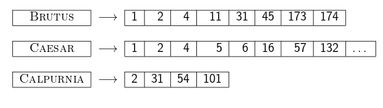
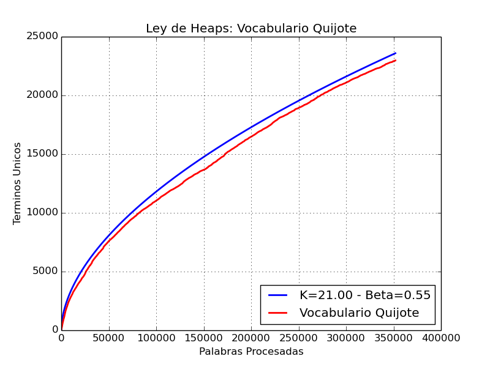
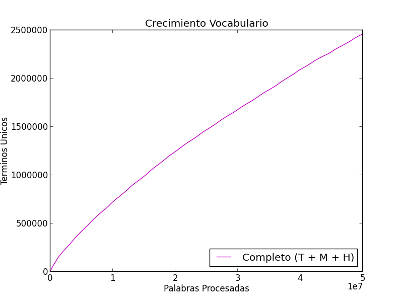
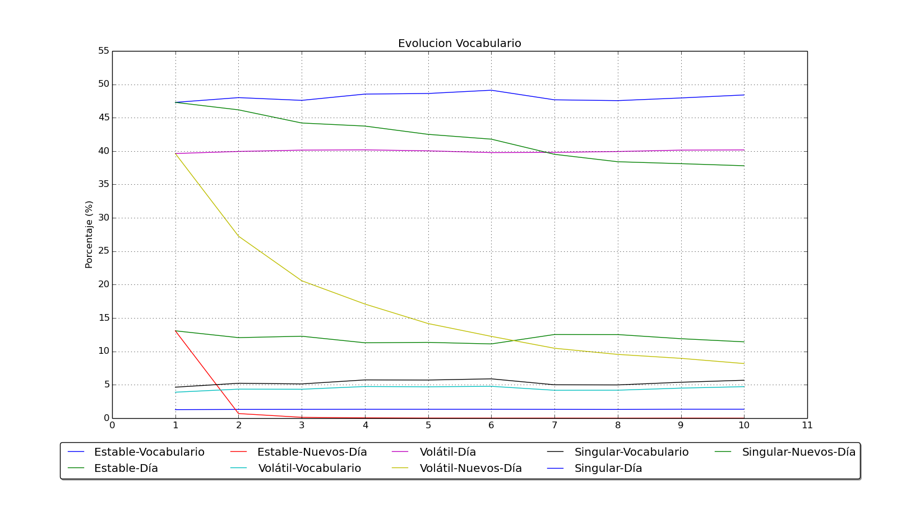

Indexación Eficiente de Flujos de Tweets
Trabajo Final en Curso
Licenciatura en Sistemas de Información
@earissola - Esteban A. Ríssola
Director: Mg. Gabriel H. Tolosa
JCU - UNLu (2014)
Microblogging
Akshay Java, Xiaodan Song, Tim Finin, and Belle Tseng. Why we twitter: understanding microblogging usage and communities. WebKDD/SNA-KDD '07. ACM. 2007.A form of blogging that lets you write brief text updates (usually less than 200 characters) about your life on the go and send them to friends and interested observers via text messaging, instant messaging (IM), email or the web
¿Alguno suena conocido?
El caso paradigmático: Twitter
- 6.000 Tweets/Segundo
- 350.000 Tweets/Minuto
- 500.000.000 Tweets/Día
- 200.000.000.000. Tweets/Año
¿Twittear o no Twittear...? He ahí la cuestión
Estadísticas extraídas de: http://www.internetlivestats.com/twitter-statisticsBúsqueda en Tiempo Real
Principales Requerimientos
- Procesamiento de consultas de baja latencia y alto throughtput
- Alta tasa de ingestión y disponibilidad inmediata
- Lecturas y escrituras concurrentes
- Predominio del factor temporal
Índice Invertido y Búsqueda
- Vocabulario y Listas de Posteo en memoria
- Listas de Posteo:
- - Organizadas cronológicamente hacía adelante (Más recientes últimas)
- - Se recorren hacía atrás (Más recientes primero)
Indíce Invertido - Estructura de Datos para RI
- Para cada término t se mantiene una lista de todos los documentos que lo contienen
- Listas de Posteo ordenadas por un número que identifica cada documento univocamente en la colección (docID)
- Complementariamente es posible almacenar la frecuencia del término en el documento en cuestión, posición en el texto, entre otros

Fuente: C. D. Manning, P. Raghavan, y H. Schütze. Introduction to Information Retrieval. Cambridge University Press. 2008.
Tweets2011 - TREC Microblog Dataset
16 millones de Tweets
Período de la Muestra: 23/01 - 08/02 de 2011
Descargados con éxito: 11.601.066 Tweets
Estadísticas Recolectadas
- #Hashtags: 35.736
- @Menciones: 216.495
- Términos: 224.922
- Promedio de #Hashtags por Tweet: 1,38
- Promedio de @Menciones por Tweet: 1,21
Crecimiento del Vocabulario en RI
Ley de Heaps
Pero en Twitter...
El vocabulario total no se estabiliza, entonces ¿podemos almacenar todos los tokens en el índice invertido observando como crecen?
La respuesta es NO
Debemos encontrar alguna manera de podar el vocabulario, sin dañar la efectividad general del sistema
Nuestra Propuesta
Analizar el vocabulario obtenido con el fin de reconocer la dinámica que lo caracteriza y así, identificar aquellos tokens que pueden ser podados del índice invertido
Esto permite disminuir el tamaño del índice, e incluso mentenerlo constante en el tiempo, hecho que admite mentenerlo en memoria
Sin embargo, para ello es necesario encontrar un compromiso entre la agresividad de la poda y la efectividad
Tres formas de caracterizar los tokens
- Estables
- Volátiles (ó Esporádicos)
- Singulares
¿Qué observamos?
El vocabulario total no se estabiliza tanto para los tokens volátiles como para los singulares
¿Cómo identificar cada uno?
Analizando la frecuencia de los tokens...
¿Qué conceptos e ideas podemos aprovechar?
Poda Estática del Índice Invertido
- Term-Base Pruning
Poda Dinámica (Procesamiento optimizado de los Top-K)
- WAND
Caché para Motores de Búsqueda
- CIP